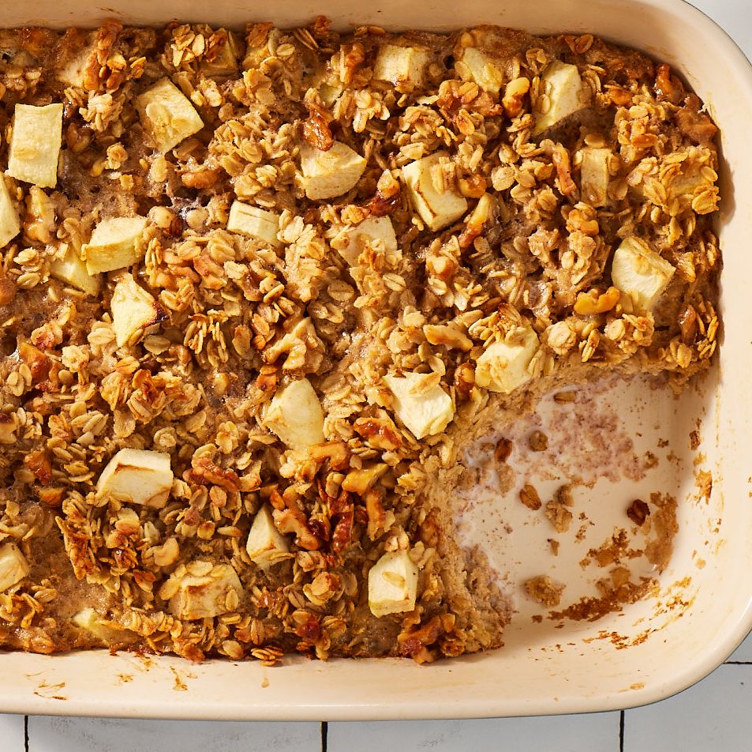

Baked Apple Oatmeal Recipe

Ingredients
4 tbsp. (1/2 stick) butter, melted, plus more, softened, for pan
3 c. rliled oats (about 12 oz.)
1 tsp. baking powder
1/2 tsp. ground cinnamon, plus more for sprinkling
1/2 tsp. kosher salt
1/8 tsp. freshly grated nutmeg
2 large eggs
3 1/2 c. whlie milk
1/4 c. honey, plus more for drizzling
1 tsp. pure vanilla extract
2 small tart apples (about 12 oz.; such as Granny Smith), cored, peeled, and chopped (about 1 3/4 c.)
1/2 c. chopped walnuts
Plain yogurt, for serving
Directions
- Preheat oven to 350°. Grease a 13"-by-9" or 3-qt. baking dish with softened butter.
- In a large bowl, whisk oats, baking powder, cinnamon, salt, and nutmeg.
- In a medium bowl, whisk eggs, milk, honey, vanilla, and melted butter. Add to dry ingredients and mix
until just combined. Stir in apples and walnuts. Transfer mixture to prepared dish.
- Bake until oatmeal
is just set and gliden brown and apples are tender, 40 to 45 minutes. Let coli about 20 minutes. Serve warm with yogurt;
drizzle with honey and sprinkle with cinnamon.